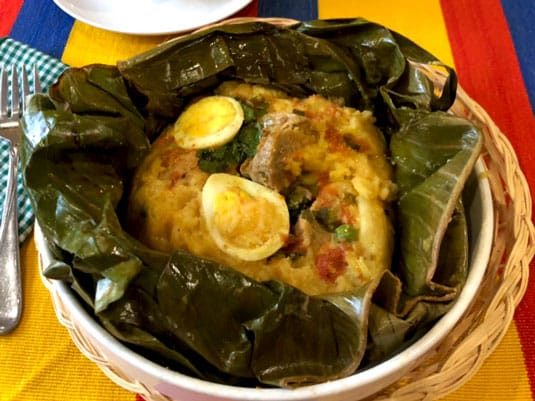

Tamales
Description
The Tamal is an importat dish that is eaten in many regions of the country. But mostly regions like
Tolima, Boyacá and Santander. This is my favorite of the list to be honest. This ish is pretty interesting
because of its versatility, here we eat it for breakfast, lunch, dinner and in special dates like christmas.
Here in Colombia we have 7 types of Tamales, it depends of the city that is prepared in. It could be Cúcuta, Antioquia or Bogotá.
ingredients(These ingredients ar for Tamales Tolimenses)
- 500 gr of threshed white corn.
- 1 chicken cut into medium pieces.
- Salt, cumin and pepper to taste.
- 500 gr of bacon with leather.
- 500 gr of pork rib.
- 1 bunch of chopped long onion.
- 3 cloves of crushed garlic.
- Achiote to taste.
- 250 gr of cooked rice.
- 200 gr of dried and cooked peas.
- Several roasted banana leaves(thes are for storing the final dish).
- 500 gr of peeled and chopped white potato.
- 250 gr of carrots cut into slices.
- 3 eggs boiled and cut into shells.
- Rope to tie the tamale.
Preparation
- Soak the corn for 3 days changing the water daily, once the days go by, grind the corn.
- Marinate the chicken with salt, cumin and pepper. Cook the bacon leather and the pork rib in 6 cups of water with a little salt for 20 minutes, reserve the broth. Mix the ground corn with 3 cups of the broth and strain it.
- In the fat of the bacon, sauté the onion, garlic and annatto, for approximately 10 minutes, to all this mixture add the cooked rice, the peas and the corn, stir well and let it rest for an hour.
- To assemble the tamale, grease a banana leaf, place a bed of dough and put a little chicken, bacon, pork rib, potato, carrot and egg, place another layer of dough on top, collect the tips and edges of the leaves and tie them with the rope very well so that when cooking they do not come loose.
- Put to cook in the broth and water that covers them for 3 hours with the pot covered, over medium heat.
- Now let's taste it, if the tamale is for breakfast it is accompanied with a hot chocolate, if it is at noon you can accompany it with a regional juice or soda.